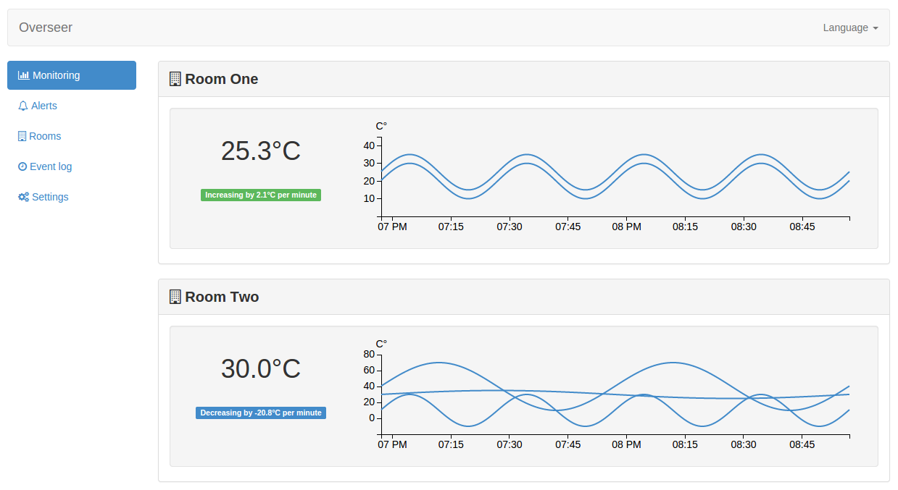
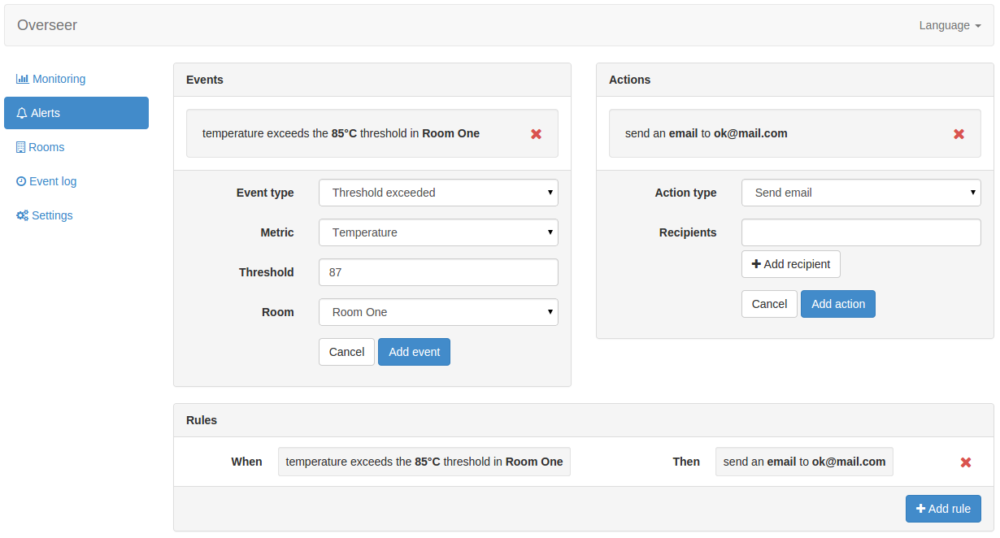
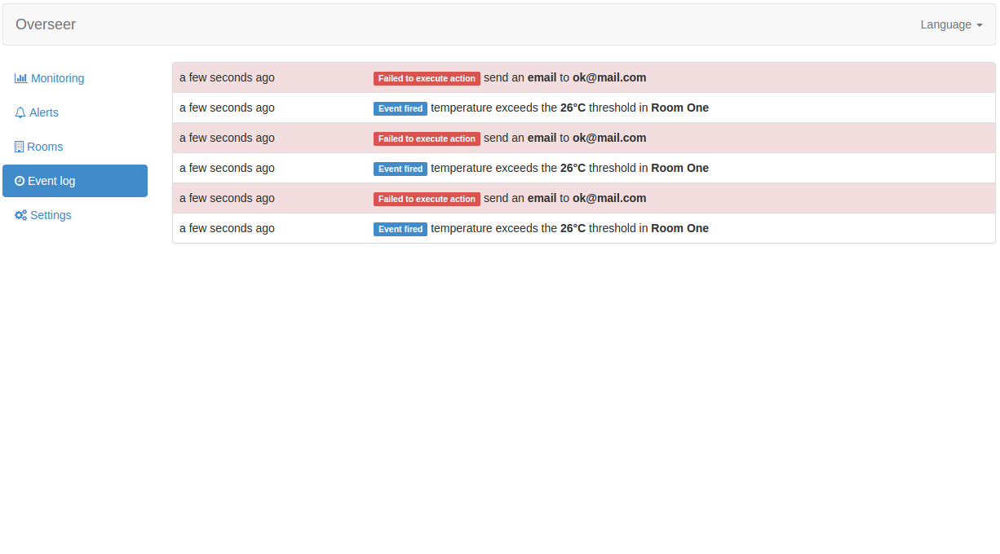

Supervision
Observez avec efficacité l’environnement de vos salles serveurs


Actions de virtualisation
En réaction à des événements environnementaux, configurez des actions sur votre plateforme de
virtualisation
Rapports d'incidents
Parcourez l'historique des événements qui ont conduit à l'incident et analysez sa cause.
